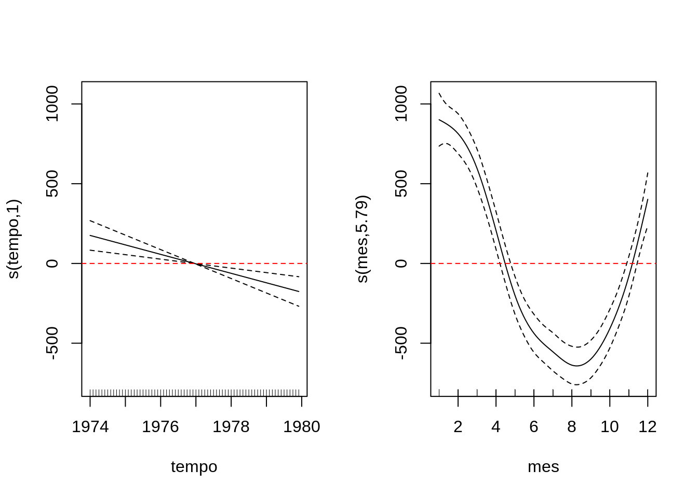

1 Exemplo de um modelo GAM
Transforma o exemplo ldeaths de ts em data.frame preservando as estruturas temporais (tempo e mes)
| tempo | obitos | mes |
|---|---|---|
| 1974.000 | 3035 | 1 |
| 1974.083 | 2552 | 2 |
| 1974.167 | 2704 | 3 |
| 1974.250 | 2554 | 4 |
| 1974.333 | 2014 | 5 |
| 1974.417 | 1655 | 6 |
modelando como GAM
Sumário do modelo
R-quadrado(ajustado) = 0.86 Deviance Explicada = 0.88 AIC = 995.27
Gráfico do termos suaves

Vamos verificar se sobraram estruturas nos residuos usando a ACF dos residuos e o teste de Ljung-Box
| Test statistic | df | P value |
|---|---|---|
| 0.7716 | 1 | 0.3797 |
Como podemos observar a variavel tempo que captura a tendencia ficou completamente linear vamos agora usar a variavel tempo de forma linear no modelo
R-quadrado(ajustado) = 0.86 Deviance Explicada =0.87 AIC = 994.67
| Test statistic | df | P value |
|---|---|---|
| 0.7346 | 1 | 0.3914 |